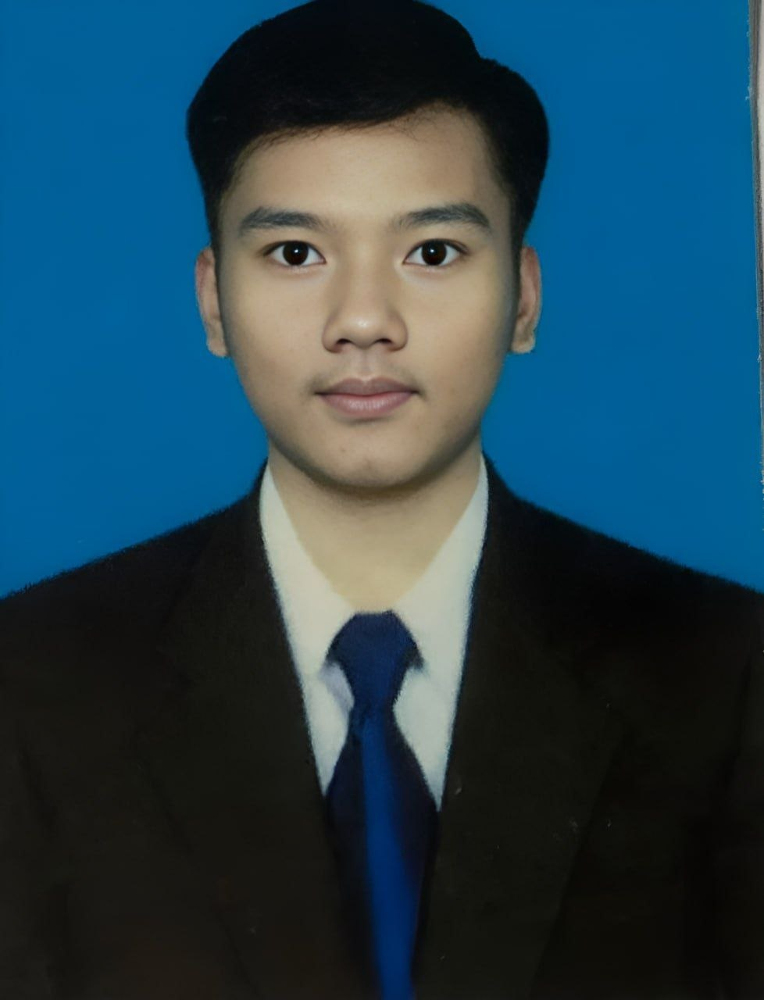

2024 – Present
Royal University of Phnom Penh (RUPP)
Bachelor of Engineering in Information Technology Engineering (ITE)
Currently a second-year ITE student with a strong interest in Web Development and Full-Stack Development.
ITE STUDENT • WEB DEVELOPMENT • FULL-STACK
I am a second-year Information Technology Engineering student at the Royal University of Phnom Penh (RUPP), with a strong interest in Web Development and Full-Stack Development. I enjoy building practical applications, learning new technologies, and improving my programming and problem-solving skills.

ABOUT ME
I am an ITE second-year student who is interested in creating websites and full-stack applications. My goal is to strengthen my software engineering skills through real projects and continuous practice.
My current focus is front-end development, back-end development, databases, APIs, and clean project structure. I am also improving my programming fundamentals through C, C++, and OOP.
EDUCATION
Currently a second-year ITE student with a strong interest in Web Development and Full-Stack Development.
Additional technical training focused on C, C++, Object-Oriented Programming, and programming fundamentals.
SKILLS
HTML, CSS, JavaScript, React
Node.js, Python, Java, C++, C
MySQL
VS Code, Git, GitHub
Current level: Intermediate
PROJECTS
A front-end school management project focused on creating a clear user interface for managing school-related information.
A full student management system designed for ITE-related information and workflows, combining front-end, back-end, and database concepts.
A management application built with Java Spring Boot and APIs to support coffee shop operations and data handling.
CONTACT
Feel free to contact me for projects, collaboration, or opportunities.